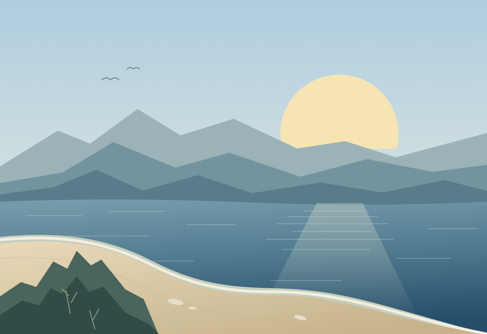

技术 · 连接
从一条网络连接开始，理解设备之间如何交流。
一个持续探索的个人空间
你好，我是陈思坪。
计算机网络与技术专业，喜欢摄影，也喜欢唱歌。
在代码、光影和旋律之间，发现日常的新可能。

保持好奇，
记录每一次发现。
01 / ABOUT ME
网络让信息抵达远方，
镜头让片刻留在身边。
我是陈思坪，学习计算机网络与技术。这个小小的网站，是我整理学习、表达兴趣的起点。除了技术，我也喜欢摄影与唱歌，希望把观察到的细节、学到的知识慢慢记录下来。
从一条网络连接开始，理解设备之间如何交流。
留意日常的光线、色彩和构图，让视线慢下来。
喜欢唱歌，也喜欢用一段旋律记录心情。
02 / SELECTED EXPLORATIONS
把想法变成看得见的东西。
从一个页面、一幅构图开始。
用原生 HTML、CSS 与 JavaScript，建立自己的线上空间。
以海面、远山与留白探索画面层次，等待真实的旅行影像。
观察建筑中的线条与色块，练习用更简单的画面表达。
影像板块当前使用为本站制作的示意插画，尚未收录个人实拍作品。
03 / LEARNING NOTES
整理思路，也给未来的自己留一份索引。
以下是本次网站实践的知识速记。
访问域名时，浏览器通常先通过 DNS 获取服务器的 IP 地址，再建立连接并发出 HTTP 请求。Nginx 收到请求后，按配置返回 HTML、CSS、JavaScript 和图片，浏览器把这些资源组合成页面。
本项目可通过服务器 IP 直接访问，此时不需要域名解析。实际访问过程还可能受到缓存、HTTPS 和协议版本的影响。
工作区修改后，用 git diff 检查变化，再通过 git add 放入暂存区，使用 git commit 记录一个完整的改动。git push 将本地提交同步到远程仓库。
部署更新时，服务器执行 git pull --ff-only 获取代码，再刷新浏览器核对变化。提交应围绕真实开发阶段，写清修改内容。
构图时可以先找到最想表达的主体，再观察线条、色块和光线是否帮助视线抵达主体。适当留白能让画面更从容。
本站使用的海岸与建筑插画是构图示例。之后可以把同样的观察方法用在真实拍摄中，再补充自己的照片和拍摄故事。
04 / SAY HELLO
聊聊技术、摄影，或者最近喜欢的一首歌。